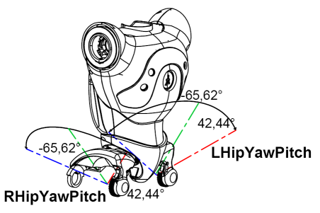

H25 - Joints - V3.3¶
Sign convention¶
Given a joint that links two body parts of the robot, the body part that is closer to the trunk is considered to be fixed and the body part that is farther from the trunk is the one that rotates around the joint axis.
To perform the rotation of the body parts, we place a frame at each joint. When the robot is at the zero pose, all joint frames have the same orientation. Then, roll rotations take place around the X axis, pitch rotations around the Y axis and yaw rotations around the Z axis.

Head joints¶
{kind=link}
Motion range
| Joint name | Motion | Range (degrees) | Range (radians) |
|---|---|---|---|
| HeadYaw | Head joint twist (Z) | -119.5 to 119.5 | -2.0857 to 2.0857 |
| HeadPitch | Head joint front and back (Y) | -38.5 to 29.5 | -0.6720 to 0.5149 |
| Click the joint name to see all related ALMemory key names. | |||
Anti collision limitation
Due to potential shell collision at the head level, the Pitch motion range is limited according to the Yaw value.
| HeadYaw | HeadPitch Min | HeadPitch Max | HeadYaw | HeadPitch Min | HeadPitch Max | |
|---|---|---|---|---|---|---|
| (degrees) | (radians) | |||||
| -119.52 | -25.73 | 18.91 | -2.086017 | -0.449073 | 0.330041 | |
| -87.49 | -18.91 | 11.46 | -1.526988 | -0.330041 | 0.200015 | |
| -62.45 | -24.64 | 17.19 | -1.089958 | -0.430049 | 0.300022 | |
| -51.74 | -27.50 | 18.91 | -0.903033 | -0.479965 | 0.330041 | |
| -43.32 | -31.40 | 21.20 | -0.756077 | -0.548033 | 0.370010 | |
| -27.85 | -38.50 | 24.18 | -0.486074 | -0.671951 | 0.422021 | |
| 0.0 | -38.50 | 29.51 | 0.000000 | -0.671951 | 0.515047 | |
| 27.85 | -38.50 | 24.18 | 0.486074 | -0.671951 | 0.422021 | |
| 43.32 | -31.40 | 21.20 | 0.756077 | -0.548033 | 0.370010 | |
| 51.74 | -27.50 | 18.91 | 0.903033 | -0.479965 | 0.330041 | |
| 62.45 | -24.64 | 17.19 | 1.089958 | -0.430049 | 0.300022 | |
| 87.49 | -18.91 | 11.46 | 1.526988 | -0.330041 | 0.200015 | |
| 119.52 | -25.73 | 18.91 | 2.086017 | -0.449073 | 0.330041 | |
Left Arm joints¶
{kind=link}
| Joint name | Motion | Range (degrees) | Range (radians) |
|---|---|---|---|
| LShoulderPitch | Left shoulder joint front and back (Y) | -119.5 to 119.5 | -2.0857 to 2.0857 |
| LShoulderRoll | Left shoulder joint right and left (Z) | -18 to 76 | -0.3142 to 1.3265 |
| LElbowYaw | Left shoulder joint twist (X) | -119.5 to 119.5 | -2.0857 to 2.0857 |
| LElbowRoll | Left elbow joint (Z) | -88.5 to -2 | -1.5446 to -0.0349 |
| LWristYaw | Left wrist joint (X) | -104.5 to 104.5 | -1.8238 to 1.8238 |
| LHand | Left hand | Open and Close | Open and Close |
| Click the joint name to see all related ALMemory key names. | |||
Right Arm joints¶
{kind=link}
| Joint name | Motion | Range (degrees) | Range (radians) |
|---|---|---|---|
| RShoulderPitch | Right shoulder joint front and back (Y) | -119.5 to 119.5 | -2.0857 to 2.0857 |
| RShoulderRoll | Right shoulder joint right and left (Z) | -76 to 18 | -1.3265 to 0.3142 |
| RElbowYaw | Right shoulder joint twist (X) | -119.5 to 119.5 | -2.0857 to 2.0857 |
| RElbowRoll | Right elbow joint (Z) | 2 to 88.5 | 0.0349 to 1.5446 |
| RWristYaw | Right wrist joint (X) | -104.5 to 104.5 | -1.8238 to 1.8238 |
| RHand | Right hand | Open and Close | Open and Close |
| Click the joint name to see all related ALMemory key names. | |||
Pelvis joints¶
{kind=link}
| Joint name | Motion | Range (degrees) | Range (radians) |
|---|---|---|---|
| LHipYawPitch | Left hip joint twist (Y-Z 45°) | -65.62 to 42.44 | -1.145303 to 0.740810 |
| RHipYawPitch* | Right hip joint twist (Y-Z 45°) | -65.62 to 42.44 | -1.145303 to 0.740810 |
| Click the joint name to see all related ALMemory key names. | |||
Note
LHipYawPitch and RHipYawPitch are physically just one motor so they cannot be controlled independently. In case of conflicting orders, LHipYawPitch always takes the priority.
Left Leg joints¶
{kind=link}
Motion range
| Joint name | Motion | Range (degrees) | Range (radians) |
|---|---|---|---|
| LHipRoll | Left hip joint right and left (X) | -21.74 to 45.29 | -0.379472 to 0.790477 |
| LHipPitch | Left hip joint front and back (Y) | -88.00 to 27.73 | -1.535889 to 0.484090 |
| LKneePitch | Left knee joint (Y) | -5.29 to 121.04 | -0.092346 to 2.112528 |
| LAnklePitch | Left ankle joint front and back (Y) | -68.15 to 52.86 | -1.189516 to 0.922747 |
| LAnkleRoll | Left ankle joint right and left (X) | -22.79 to 44.06 | -0.397880 to 0.769001 |
| Click the joint name to see all related ALMemory key names. | |||
Anti collision limitation
Due to potential shell collision at the ankle level, the Roll motion range is limited according to the Pitch value.
| LAnklePitch | LAnkleRoll Min | LAnkleRoll Max | LAnklePitch | LAnkleRoll Min | LAnkleRoll Max | |
|---|---|---|---|---|---|---|
| (degrees) | (radians) | |||||
| -68.15 | -2.86 | 4.30 | -1.189442 | -0.049916 | 0.075049 | |
| -48.13 | -10.31 | 9.74 | -0.840027 | -0.179943 | 0.169995 | |
| -40.11 | -22.80 | 12.61 | -0.700051 | -0.397935 | 0.220086 | |
| -25.78 | -22.80 | 44.06 | -0.449946 | -0.397935 | 0.768992 | |
| 5.73 | -22.80 | 44.06 | 0.100007 | -0.397935 | 0.768992 | |
| 20.05 | -22.80 | 31.54 | 0.349938 | -0.397935 | 0.550477 | |
| 52.87 | 0.00 | 2.86 | 0.922755 | -0.000000 | 0.049916 | |
Right Leg joints¶
{kind=link}
Motion range
| Joint name | Motion | Range (degrees) | Range (radians) |
|---|---|---|---|
| RHipRoll | Right hip joint right and left (X) | -45.29 to 21.74 | -0.790477 to 0.379472 |
| RHipPitch | Right hip joint front and back (Y) | -88.00 to 27.73 | -1.535889 to 0.484090 |
| RKneePitch | Right knee joint (Y) | -5.90 to 121.47 | -0.103083 to 2.120198 |
| RAnklePitch | Right ankle joint front and back (Y) | -67.97 to 53.40 | -1.186448 to 0.932056 |
| RAnkleRoll | Right ankle joint right and left (X) | -44.06 to 22.80 | -0.768992 to 0.397935 |
| Click the joint name to see all related ALMemory key names. | |||
Anti collision limitation
Due to potential shell collision at the ankle level, the Roll motion range is limited according to the Pitch value.
| RAnklePitch | RAnkleRoll Min | RAnkleRoll Max | RAnklePitch | RAnkleRoll Min | RAnkleRoll Max | |
|---|---|---|---|---|---|---|
| (degrees) | (radians) | |||||
| -68.15 | -4.30 | 2.86 | -1.189442 | -0.075049 | 0.049916 | |
| -48.13 | -9.74 | 10.31 | -0.840027 | -0.169995 | 0.179943 | |
| -40.11 | -12.61 | 22.80 | -0.700051 | -0.220086 | 0.397935 | |
| -25.78 | -44.06 | 22.80 | -0.449946 | -0.768992 | 0.397935 | |
| 5.73 | -44.06 | 22.80 | 0.100007 | -0.768992 | 0.397935 | |
| 20.05 | -31.54 | 22.80 | 0.349938 | -0.550477 | 0.397935 | |
| 52.87 | -2.86 | 0.00 | 0.922755 | -0.049916 | 0.000000 | |